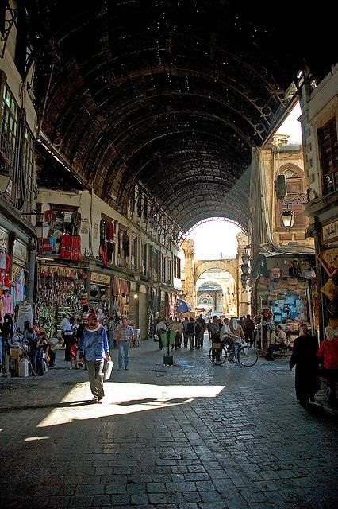
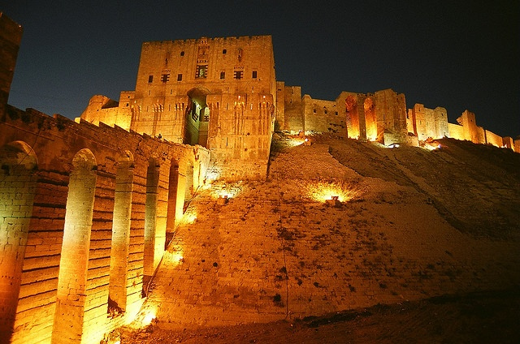
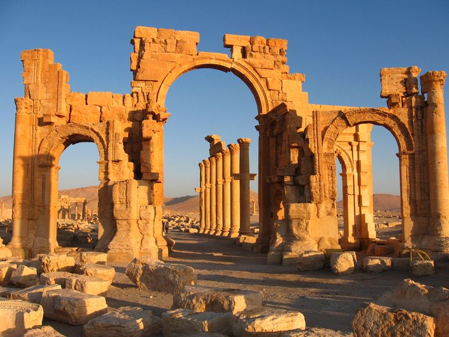
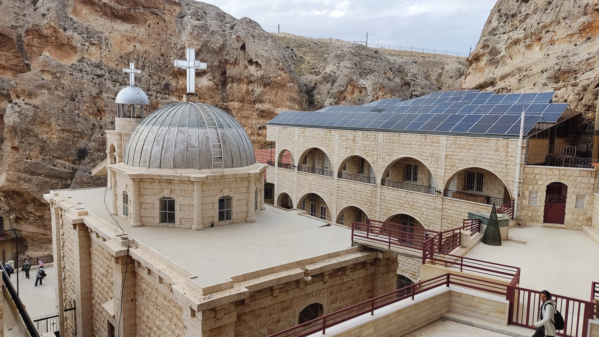
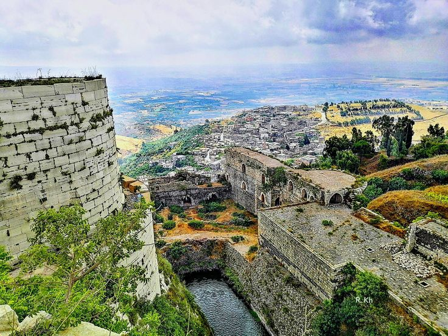
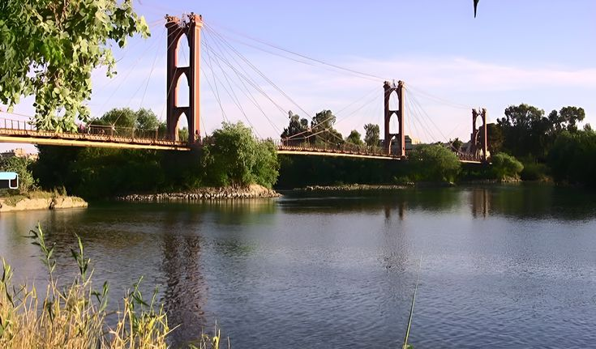
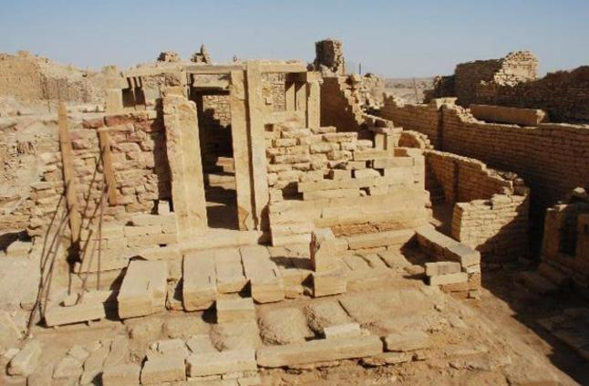
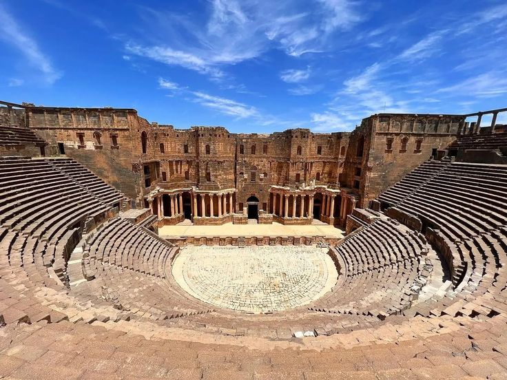
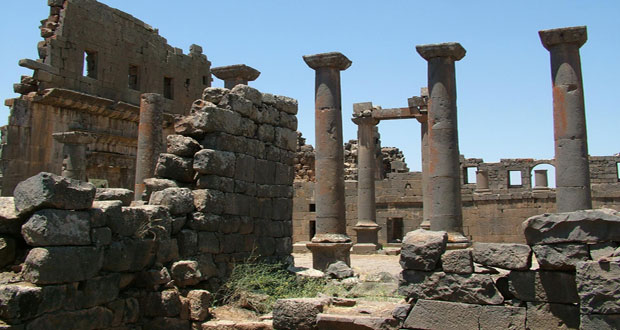

خدماتنا الحكومية
الخدمات القنصلية
- إصدار وتجديد الجوازات
- توثيق الوثائق الرسمية
- خدمات التأشيرات
الشؤون القانونية
- توثيق العقود
- الإرشاد القانوني
- حل النزاعات
العلاقات الدولية
- تمثيل دبلوماسي
- اتفاقيات التعاون
- منظمات دولية
معالم سوريا التاريخية

دمشق
إسلامي
الجامع الأموي
تاج عالراس! من أقدم وأجمل الجوامع بالعالم الإسلامي. بناه الوليد بن عبد الملك، ومكانه كان معبد روماني.
- يضم ضريح النبي يحيى عليه السلام
- فسيفساء رائعة تغطي الجدران
- قبة النسر الشهيرة

حلب
آشوري
قلعة حلب
قلب التاريخ النابض، واحدة من أقدم القلاع بالعالم...
- مباني من العصور الوسطى
- إطلالة ساحرة على المدينة
- متحف أثري داخلي

تدمر
روماني
آثار تدمر
جنة الصحراء القديمة، مدينة أثرية رومانية تحتضن الأعمدة والمعابد الرائعة.
- كولوسيوم صغير
- معابد ذات نقوش فنية عالية
- شوارع مرصوفة بأحجار ضخمة

معلولا
مسيحي
دير مار تقلا
واحة الروحانية، دير قديم يحكي تاريخ المسيحية في قلب جبال القلمون.
- لغة آرامية ما زالت حية
- جدران مزينة بالفسيفساء
- مشاهد طبيعية خلابة

حمص
صليبي
قلعة الحصن
قلعة الفرسان المنيعة، صمدت في وجه الزمان والغزاة.
- تحصينات متينة وأبراج مراقبة
- موقع استراتيجي مهم
- تاريخ حافل بالحروب والمعارك

دير الزور
حديث
نهر الفرات
شريان الحياة للسوريين، ينبوع الحضارة والخصب في الشرق السوري.
- مشاهد طبيعية ساحرة
- مزارع شاسعة على ضفافه
- موقع استراتيجي اقتصادي

تدمر
روماني
قصر العرش
قصر فخم تزينه الأعمدة والمنحوتات الرومانية العتيقة.
- تصميم معماري مدهش
- إطلالة على الصحراء
- شواهد تاريخية أثرية

بصرى
روماني
مسرح بصرى
فيها مسرح روماني كامل، يُعتبر من الأجمل والأفضل حفاظًا في العالم.
- مبني من البازلت الأسود
- سعة 15000 متفرج
- أكروبول المدينة القديمة

قنوات
روماني
قنوات الأثرية
مدينة رومانية فيها آثار ومدرجات ونوافير، وحجارة سوداء تحكي عن مجد الأنباط والرومان.
- معبد زيوس
- شارع الأعمدة
- المسرح الروماني